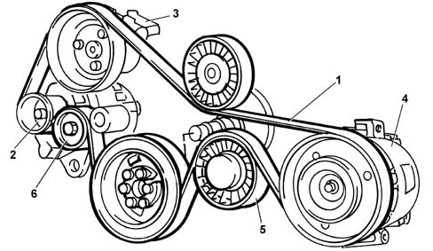

Composition
- Path
- Descriptions > 10 ENGINE > 1092 engine component miscellaneous drives > Composition
- Kind
- system description
- Applies to
- engines: 2.4 JTD 10V; all production periods
- Interactive page
- https://sloeber94.github.io/elrnDB-lThss/en/#/612669
Applies to: engines: 2.4 JTD 10V; all production periods
STRUCTURE
The poly-V engine components single drive belt (1) drives the alternator (2), the power assisted steering pump (3) and the air conditioning compressor (4).
The belt is tensioned by a tensioner cam (5) for the preload and automatic tensioner (6) and does not require servicing.
The crankshaft pulley contains a flexible sector that reduces crankshaft torsional vibration and stresses on the belt and thus on auxiliary engine components.
